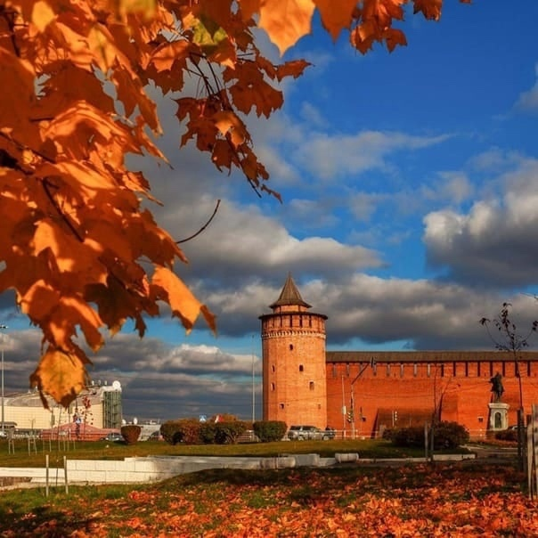

Сканди-мероприятия
-

ЭКСКУРСИОННО-ПЕШЕХОДНАЯ прогулка «Коломенские гуляния»
19 октября 2024г
Приглашаем дорогих гостей в древний град Коломна! В субботу 19 октября нас ждут увлекательные "Коломенские гуляния". Это разнообразная - и пешеходная, и театральная, и гастрономическая программа, которую для нас проведет "Лучший экскурсовод Московской области 2023" - нам давно знакомый Константин Братчиков.
Мы встретимся на Казанском вокзале и на экспрессе быстро доедем до платформы "Коломна", там на открытой поляне мы проведем разминку и через Посад двинемся в Кремль. По пути нас ждет увлекательная экскурсия и знакомство с такой многогранной Коломной, которая не только про "пастилу" и "калачи", но и про многовековую историю нашей Родины. Прогулка по Коломенскому кремлю познакомит нас с самыми важными объектами и событиями здесь происходившими. Особое внимание мы уделим реке Москве, как важной торговой артерии - "хлебных ворот" столицы. Наша театральная часть продолжится увлекательным театром теней - "про град Коломну и ея знаменитых людей" - мы станем не только зрителями, но и участниками постановки "Маринкины скаСки" - мы погрузимся в Смутное время и проживем вместе с нашей героиней - вороной Маринкой - увлекательные приключения на пути царской короне. После спектакля мы отправимся на обед в паб "Синий банан", а после него угостимся "Виниловым десертом" - особенным смузи под аккомпанемент мелодий из настоящего проигрывателя эпохи 1980-х годов с увлекательными музыкальными конкурсами и вкусными призами. После обеда мы отправимся в Старо-Голутвин монастырь и познакомимся с этой древней обителью, которая была основана в далеком XIV веке учеником Сергия Радонежского. После посещения Монастыря, кстати, не забудьте про особый дресс-код, мы отправимся на платформу Голутвин и там закончим наши "Коломенские гуляния"
Программа:
• 10.00 встреча на платформе Коломна, разминка, пешеходный переход с экскурсией в Кремль
• 11.30 Театр теней Лига-тур
• 12. 30 Отправляемся в арт-квартал «Патефонка»
• 13.30 Обед в кафе «Синий банан» (бизнес-ланч)
• 14.15 - 15.00 Музыкальная игра «Виниловый десерт»
• 15.00 поход в Старо-Голутвин монастырь с экскурсией
• Выезд домой со станции Голутвин
Как добраться:
От Казанского вокзала едем на фирменном экспрессе Рязань - 1 до станции Коломна. Отправление 8.30.
Билеты заранее (продажа начинается за 10 дней).
Отправление обратно на электричке от станции Голутвин в 18.08 (прибытие на Казанский вокзал в 20.40).
Автомобилисты также могут присоединиться, но надо учитывать, что программа закончится у станции Голутвин и до Коломны придётся возвращаться самостоятельно.
В стоимость входит: полностью эксурсионно-спортивная программа; обед в кафе.
В стоимость НЕ входит: железнодорожные билеты.
Экскурсовод Константин Братчиков
Организатор и инструктор Волосюк Маргарита
Стоимость: 5000р
ЗаписатьсяПодробнее -

SCANDI-ПОХОД ПО ЗЕЛЕНОМУ КОЛЬЦУ МОСКВЫ. Участок м.Строгино – м.Молодежная
9 ноября 2024г
Зелёное кольцо Москвы - это пешеходный маршрут протяжённостью 160 километров, который проходит по паркам и зелёным зонам с минимальными переходами по городским улицам и опоясывает таким образом Москву.
На пути встречается множество достопримечательностей — есть возможность увидеть не просто зеленые парки, но и самые красивые виды города, исторические места и много интересных и неизвестных памятников столицы.
Маршрут подходит как для семейных прогулок, так и для тренировок спортсменов в беге, маунтинбайке, скандинавской ходьбе. Зимой — для занятий лыжами. Автор маршрута Александр Советов.
Увидим парки:
Пройдем вдоль Строгинского залива и берега Москвы реки
Полюбуемся на храмовые комплексы усадьбы Троице-Лыково
Москворецкий парк
Участок протяженностью около 17 км
Нас ждёт :
• Сканди-разминка
• Дыхательная гимнастика
• Поход с наслаждением и любовью
• Дружеские кофе/чайные паузы
• Растяжка в конце маршрута
Длительность около 6 часов
Участок можно будет пройти не полностью.
Свернуть с маршрута можно будет районе метро Крылатское
📍Одежда и обувь спортивная по погоде.
📍Скандинавские палки берем с собой и улыбку тоже.
📍Термосы с чаем и перекусы приветствуются.
Вся организационная информация будет в телеграмм-чате
Инструктор Волосюк Маргарита
Стоимость: 1100р
ЗаписатьсяПодробнее -

СКАНДИ-КВЕСТ с посещением музея городского хозяйства Москвы
17 ноября 2024 9:30
Необычный формат сканди-квеста включает в себя спортивную прогулку для любителей скандинавской ходьбы по территории ВДНХ и парка Останкино и интерактивный квест в Музее городского хозяйства Москвы (павильон 5).
Музей городского хозяйства Москвы уникальное место, где мы узнаем как устроено коммунальное хозяйство Москвы. Здесь на столицу можно посмотреть глазами тех людей, чья ежедневная работа — делать ее комфортной, безопасной, яркой и доступной для всех. Интерактивные инсталляции позволят погрузиться в этот непростой процесс полностью.
Наш путь будет лежать от метро Ботанический сад к павильону 5. В 10.30 нас будут встречать в музее. С экскурсоводом пройдем по экспозиции и ответим на 30 вопросов. И не просто, а в виде графического дизайна. Без призов не уйдет никто. Мероприятие организовано только для нашей группы.
После посещения музея мы отправимся на прогулку в парк Останкино и насладимся видами усадьбы Останкино . Завершение прогулки можно сделать в исторической Пончиковой. Таких вкусных московских пончиков нет больше нигде.
Что нас ждет?
Пешеходный маршрут м.Ботанический сад – павильон 5 – парк Останкино ориентировочно 6 км
Квест в Музее городского хозяйства около 1,5 часов и самостоятельный осмотр экспозиции.
Небольшая тренировка на свежем воздухе.
Поедание вкусных пончиков (по желанию)
Продолжительность всего мероприятия полностью 4 – 5 часов ( при желании можно покинуть группу после квеста).
Инструктор Волосюк Маргарита
Стоимость: 1300р
ЗаписатьсяПодробнее -

Жемчужное ожерелье Москвы. Вглубь веков по Дмитровской дороге.
Дата уточняется
Друзья, приглашаем вас на целый день отправиться в сканди-путешествие по Дмитровской дороге. Погружать нас в мир истории и флоры будет наш гид Антон Гладилин.
В этот день мы посетим:
- Усадьбу Виноградово с изящной Владимирской церковью (1772-1777 гг.)
- Великолепную усадьбу Марфино, где прогуляемся по парку, посмотрим на Рыцарский мост и знаменитых грифонов. Посетим два храма – Рождества Богородицы в духе европейского ренессанса (1707 год) и Петра и Павла (1777 год). А также увидим впечатляющий, но частично разрушенный каретный двор. Готические постройки усадьбы особенно красивы на фоне пышной июльской зелени!
- Усадьбу Никольское-Прозоровское, чьи главный дом и флигели еще сохраняют следы роскошной необарочной отделки. А рядом находится восстановленный храмовый комплекс.
- Усадьбу Никольское-Обольяниново с огромным усадебным парком, главным домом и восстановленным храмом. Здесь есть и хорошо сохранившиеся липовые аллеи регулярного парка и большие поляны, каскад прудов. А также участки пейзажного парка, старинные дубы, ельник. От границ парка открываются захватывающие виды на окрестности.
Сейчас восстановлением этой усадьбы занимается целеустремленная и отважная команда волонтеров. Мы увидим результаты их деятельности, а также мы проведем небольшой мастер-класс по инвазивной флоре.
- Усадьбу Ольгово с живописными руинами, парком, прудами и гротом!
- Храм Покрова Богородицы в Андреевском (архитектор Франческо Компорези, 1803—1821 год).
- Величественный Троицкий собор в Яхроме в стиле неоклассицизм (1892—1895 год) с отдельно стоящей колокольней (1908 года).
Помимо того, что мы обогатимся новыми знаниями в области истории и ботаники, мы, позанимаемся скандинавской ходьбой, сделаем различные упражнения и надышимся чистым воздухом.
Отъезд на микроавтобусе от метро Алтуфьево в 9:00
Возвращение к метро Алтуфьево к 21:00
В цену включено:
- вся спортивно-экскурсионная программа,
- автобус на весь день
- обед.
Инструктор: Краснова Елена
Гид: Гладилин Антон
Стоимость: 7900р
ЗаписатьсяПодробнее